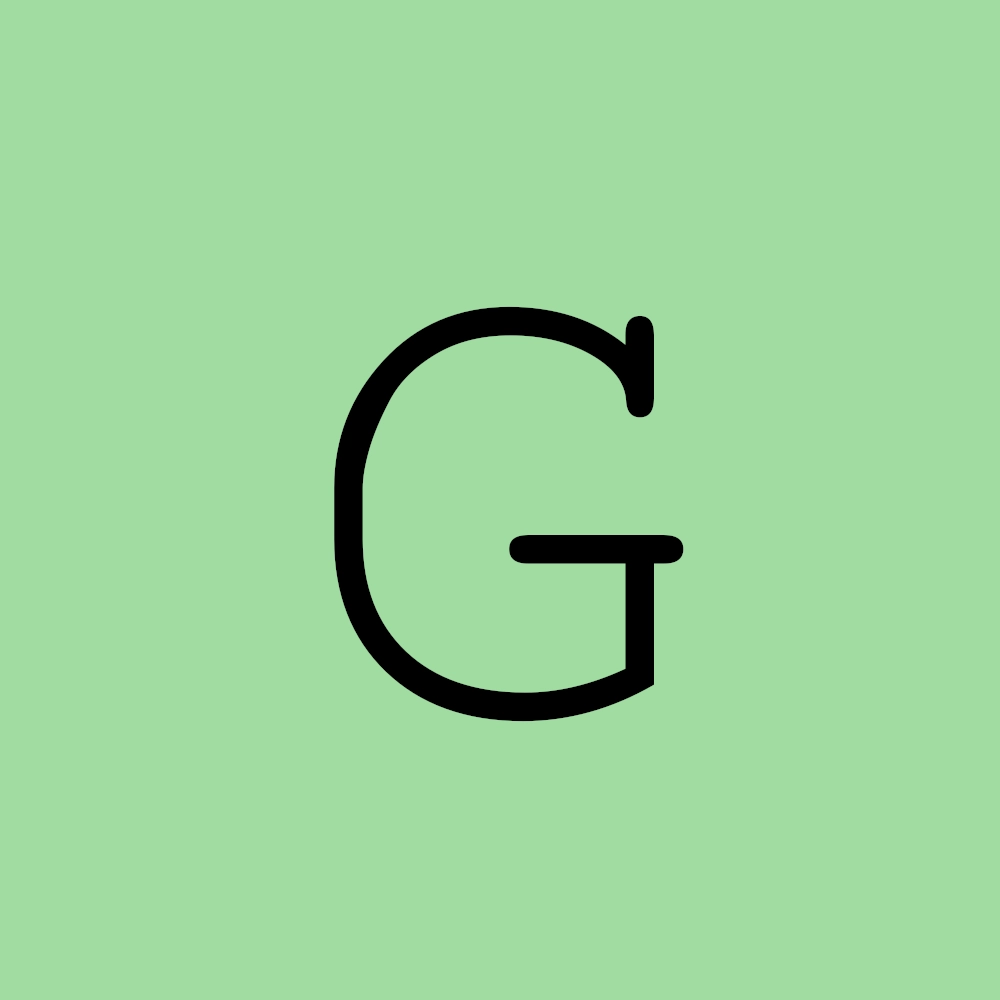

A tag <picture> permite adicionar várias imagens
Lembrando sempre que dentro da tag <picture> a imagem base é a última. Devemos então criar uma hierarquia crescente no código: do menor pro maior, como está o código abaixo:
